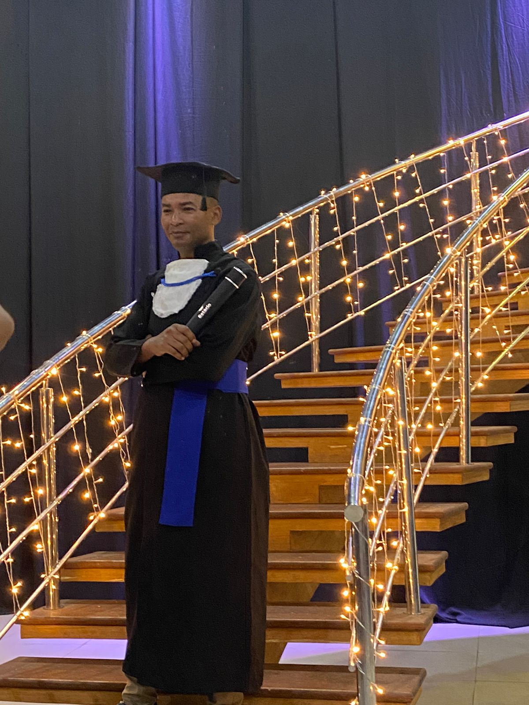
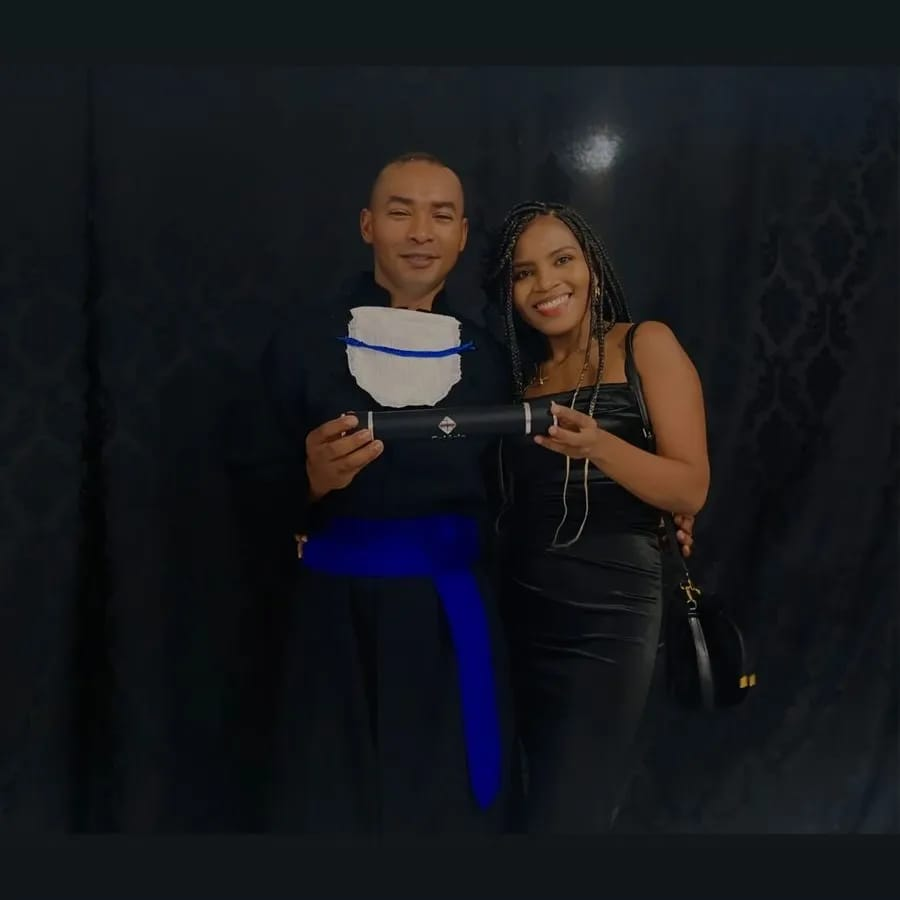
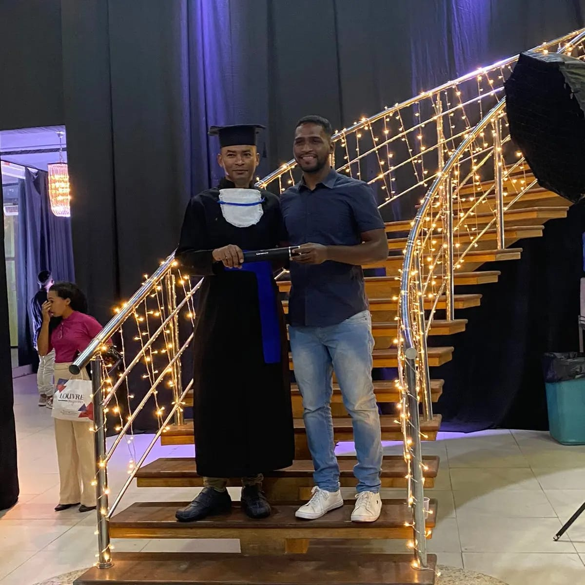
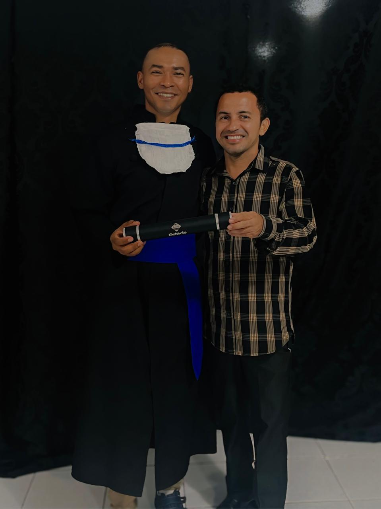
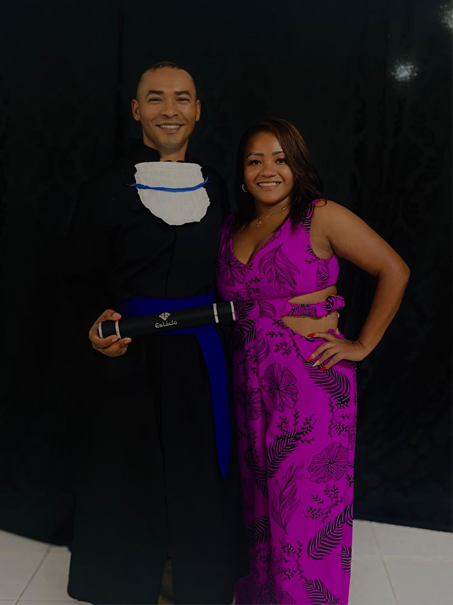
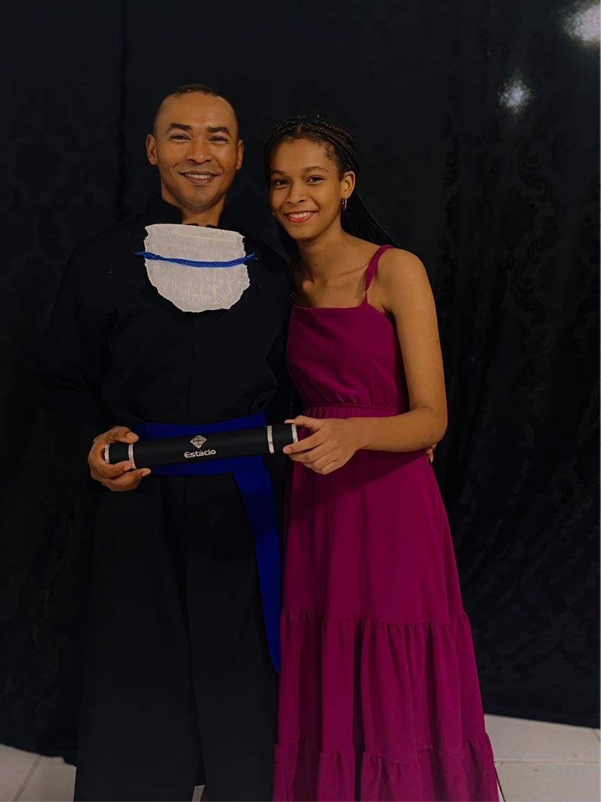
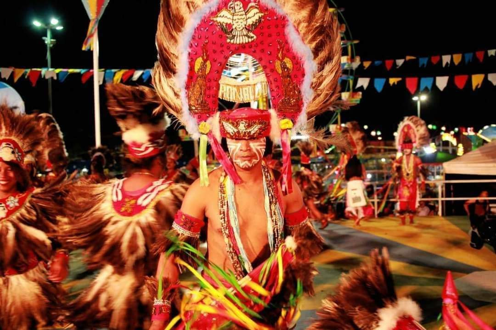

Tutoreal de Receitas
Caldo de ovos muito delicioso!!
Arroz de Toucinho
culinária maranhenseArroz de Couve
Minha formatura
Um dos momentos mais importante da minha vida, com pessoas que amo!
     Minha História Dentro da Cultura
A temporada junina é uma temporada muito bonita aqui no Maranhão. temos o bumba boi o tambor de crioula quadrilhas cacuriá e muito mais. no meu momento de lazer faço parte de dois grupos Bumba boi (Capricho do Bom Jesus e Fruto da Raça Show) onde danço vestido de índio.
A história que envolve a dança do bumba-meu-boi, está ligada à lenda de um casal de escravizados, chamados Pai Francisco e Mãe Catirina (ou Catarina). Catirina estava grávida e começou a ter desejos por língua de boi. Seu marido, para atender o desejo da esposa gestante, matou o boi bonito de seu senhor.
Agradeço por visitar o site e muito em breve estarei trazendo mais novidades !